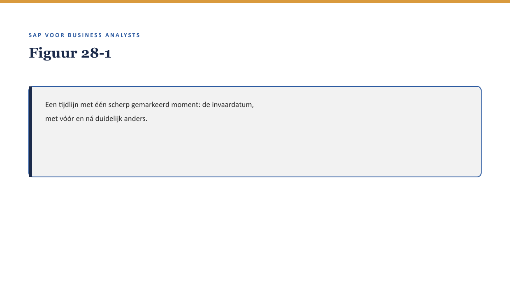
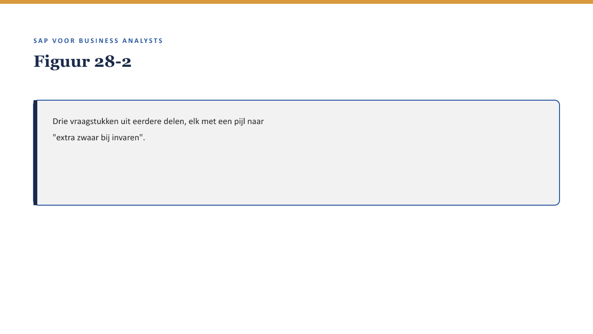

Deel 28 — Wtp als toepassingslaag
Reader · Niveau 3 Expert · Cursus SAP voor Business Analysts · Ductus
Leerdoelen
Na dit deel kun je:
- de Wet toekomst pensioenen (Wtp) plaatsen als Nederlandse pensioentoepassing van vraagstukken die deel 27 (IFRS17/FPSL) in algemene termen behandelde;
- het begrip “invaren” uitleggen: de eenmalige overgang van bestaande pensioenaanspraken naar het nieuwe stelsel;
- beoordelen welke vraagstukken uit deze cursus (documentflow, auditeerbaarheid, stamgegevens, IFRS17/FPSL-toets) bij invaren extra zwaar wegen;
- het verschil benoemen tussen een reguliere BTX/claim en een eenmalige, onomkeerbare stelselovergang;
- de Wtp-toepassingslaag koppelen aan wat een BA bij Meridiaan concreet zou moeten toetsen.
Studielast: één dagdeel klassikaal, circa drie uur zelfstudie.
1. Een ander soort wijziging
Meridiaan voert, naast de collectieve verzekeringsregelingen die de rest van deze cursus centraal stonden, ook de administratie voor twee pensioenfondsen (↗ testcursus-dossier, hoofddossier §1). Voor die fondsen geldt de Wtp — een wetswijziging die vergt dat bestaande pensioenaanspraken op een vastgesteld moment worden omgezet naar het nieuwe stelsel: invaren. Priya’s reactie op deze context: “Dit is geen BTX zoals de rest van de cursus. Dit gebeurt één keer, voor honderdduizenden aanspraken tegelijk, en het is niet terug te draaien.”

2. Waarom dit voor de BA telt
Waarom dit voor de BA telt. Dit is Pieters eigen dagelijkse praktijk als BA bij een pensioenverzekeraar — de bron voor dit deel. Het laat zien hoe de vraagstukken uit deze cursus (Universal Change, IFRS17/FPSL-toets, documentflow, auditeerbaarheid) samenkomen in een situatie waarin de gebruikelijke foutmarge — “we corrigeren het later wel” — niet bestaat.
3. Invaren: wat het is en waarom het anders is dan een gewone Universal Change
Invaren is het eenmalig overzetten van bestaande pensioenaanspraken naar de nieuwe Wtp-systematiek, voor een volledige groep deelnemers tegelijk. Op het eerste gezicht lijkt dit op een Universal Change (↗ deel 11 §4.1) — een bulkwijziging die meerdere polissen/aanspraken tegelijk raakt. Het verschil is fundamenteel:
- Een reguliere Universal Change (bijvoorbeeld een jaarlijkse indexatie) is herhaalbaar en corrigeerbaar: een fout kan het jaar erop worden rechtgezet.
- Invaren is eenmalig en (vrijwel) onomkeerbaar: aanspraken worden definitief omgezet, en een fout die pas na afloop wordt ontdekt, is niet zomaar terug te draaien.
Kernzin — Alles wat deze cursus heeft geleerd over Universal Change, documentflow, en de disclaimer-methode geldt bij invaren nog steeds — maar de foutmarge die bij een reguliere BTX bestaat (“dit corrigeren we volgende maand”), bestaat hier niet.
4. Welke vraagstukken uit deze cursus extra zwaar wegen
4.1 Documentflow en auditeerbaarheid (↗ deel 16, deel 29)
Bij invaren is traceerbaarheid niet een nice-to-have maar een randvoorwaarde: elke aanspraak moet aantoonbaar correct zijn overgezet, met een volledige, controleerbare keten van oude naar nieuwe waarde.
4.2 Stamgegevenskwaliteit (↗ deel 4, niveau 1)
Een duplicaat of verouderd stamgegeven (zoals het werkgeversduplicaat uit deel 4) heeft bij een reguliere BTX beperkte impact. Bij invaren, waar elke aanspraak eenmalig en definitief wordt overgezet, kan diezelfde fout honderden of duizenden aanspraken tegelijk raken — de “stilste bron”-les uit deel 4 krijgt hier de hoogst mogelijke inzet.
4.3 De IFRS17/FPSL-toets (↗ deel 27)
Invaren verandert per definitie de verwachte toekomstige waarde van elke omgezette aanspraak — dit is een gebeurtenis die de toets uit deel 27 §5 altijd verdient, nooit een geval waarin de toets kan worden overgeslagen.

5. Wat een BA bij Meridiaan concreet zou moeten toetsen
Met alle stof uit deze cursus tot dit punt, een praktische checklist voor een BA die betrokken is bij een invaartraject:
- Is de stamgegevenskwaliteit (↗ deel 4) grondig gecontroleerd vóórdat de omzetting plaatsvindt — niet erna?
- Is de documentflow-koppeling (↗ deel 16) tussen oude en nieuwe aanspraak volledig traceerbaar?
- Is de IFRS17/FPSL-toets (↗ deel 27) uitgevoerd, met finance nadrukkelijk betrokken?
- Is er een expliciet, beargumenteerd antwoord op de vraag “wat doen we als er ná de omzetting toch een fout wordt ontdekt” — in plaats van erop te vertrouwen dat er geen fouten zullen zijn?
6. Kruisverwijzingen
- ↗ Deel 11 §4.1: Universal Change als vergelijkingspunt.
- ↗ Deel 4, niveau 1: stamgegevenskwaliteit, hier met verhoogde inzet.
- ↗ Deel 27: de IFRS17/FPSL-toets, hier altijd van toepassing.
- ↗ Deel 29: governance & auditeerbaarheid, direct relevant voor invaren.
Kernbegrippen
Wtp (Wet toekomst pensioenen) · invaren · eenmalige, onomkeerbare stelselovergang
Samenvatting in vijf zinnen
- Invaren is de eenmalige, Wtp-verplichte overgang van bestaande pensioenaanspraken naar het nieuwe stelsel.
- Het lijkt op een Universal Change maar mist de herhaalbaarheid en corrigeerbaarheid daarvan — het is (vrijwel) onomkeerbaar.
- Stamgegevenskwaliteit, documentflow/auditeerbaarheid en de IFRS17/FPSL-toets wegen bij invaren allemaal extra zwaar.
- Een fout die bij een reguliere BTX beperkt blijft, kan bij invaren honderden aanspraken tegelijk raken.
- Een BA bij een invaartraject toetst vooraf, niet achteraf — en heeft een expliciet antwoord klaar voor het geval er toch een fout wordt ontdekt.